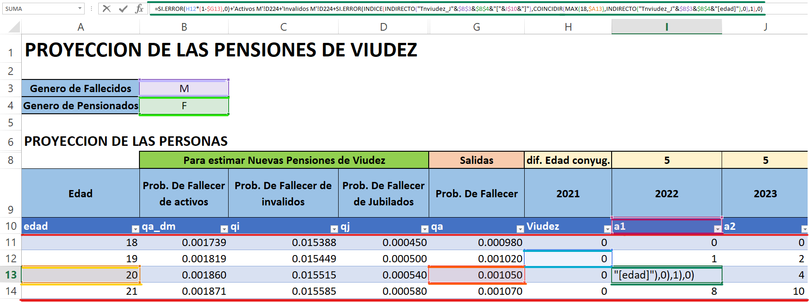
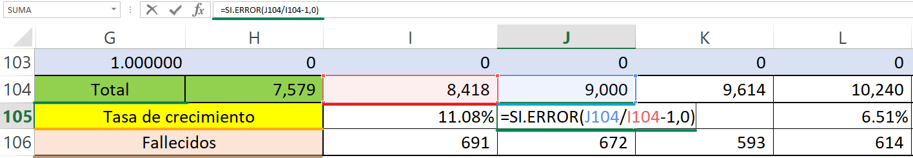
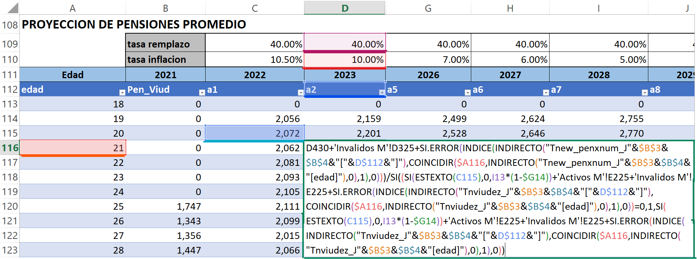
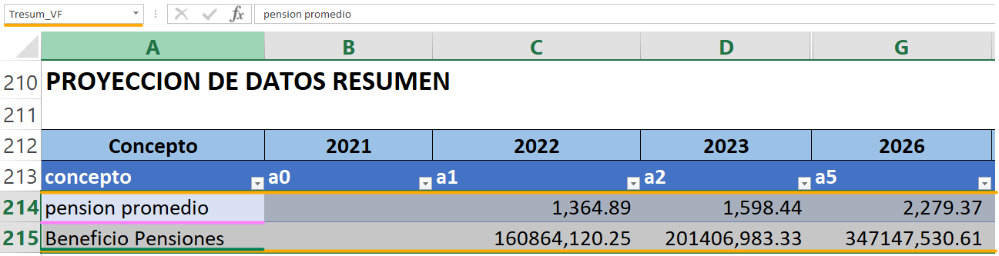

11 Viudez
11.1 Viudez Femenina [Viudez F]
En esta tabla se encuentra información detallada sobre la cantidad de viudas que se espera a lo largo de los años proyectados, los montos por viudez, un resumen de todos estos datos estimados, y otras proyecciones que son relevantes para el análisis, las cuales se describen a continuación: En esta sección se considera el género del fallecido, en este caso el esposo (M) y el género de pensionados claramente para esta tabla es femenino (F).
11.1.1 Proyección de las personas
A esta tabla en general se le ha llamado “Tviud_F”, esta tabla se divide en secciones y para determinar estos datos se hacen uso de una serie de parámetros que detallaremos a continuación
Estimar nuevas pensiones de viudez: Aquí se toman en cuenta las probabilidades de fallecimiento de un activo establecida en la tabla de decrementos múltiples \([qa\_dm]\), así mismo las probabilidades de fallecer para un inválido \([qi]\) y un jubilado \([qj]\), las cuales se encuentran en la hoja \([Tablas]\) en la matriz “Tbiometrica”.
salidas: \([qa]\) esta es la probabilidad de muerte para un cotizante activo.
Proyecciones: \([a1-a100]\) son las cantidades de viudas proyectadas que se realizan en el estudio, para este análisis se hace uso de la siguiente formula:
Donde:
\({CanV}_{x,j}\) = cantidad de viudas de edad x en el año j.
\(Can{V\_A}_{x,j}\) = cantidad de viudas al fallecimiento de un activo de edad x en el año j.
\(Can{V\_I}_{x,j}\) = cantidad de viudas al fallecimiento de un invalido de edad x en el año j.
\(Can{V\_J}_{x,j}\) = cantidad de viudas al fallecimiento de un jubilado de edad x en el año j.
\({qa}_{x-1}\) = probabilidad de que un activo fallezca a la edad x-1.
Lo antes descrito es una igualdad a la fórmula 7.3.1 y 7.3.2 Cantidad de afiliados en estado de invalidez por edad y Cantidad de afiliados en estado de invalidez que fallecen respectivamente y que se encuentra en (Nota Técnica de Proyección de Flujos del Régimen del Seguro de Previsión Social, a diciembre 2020):

11.1.2 Tabla Resumen
En esta sección se encuentra un resumen de información relevante entre ellas, el total de viudas por año proyectado, el porcentaje de crecimiento que se estima a lo largo de los años entre otras, a continuación se describen a detalle cada una de estas:
- \([Total]\) esta es la suma de todas las viudas proyectadas por año j.
- \([Tasa\ de\ crecimiento]\) representa la tasa de crecimiento poblacional en cuanto a viudas proyectadas relacionada con el año anterior y el presente, para ello se hace uso de la siguiente formula
- \([Fallecidos]\) Esta representa el producto de la suma de las cantidades proyectadas de viudas con la respectiva probabilidad de fallecer ubicada en la tabla “Tviud_F”. Para ello hacemos uso de lo siguiente

11.1.3 Proyección de Pensiones Promedio
Esta tabla llamada “Tpenviud_F” contiene las proyecciones del monto promedio de pensiones otorgadas a viudas por año y por edad, para dicho cálculo se toma en cuenta la tasa de reemplazo y la tasa de inflación. Para el primer año del análisis \([{Pen}\_{viud}]\), se busca en la tabla “Datos_Ini” de la hoja [Entrada Datos] el valor de la pensión promedio de mujeres viudas. Para el resto de los años proyectados \([{a1}-{a100}]\), se hace uso de la fórmula 7.3.3 Pensión por viudez que se encuentra en (Nota Técnica de Proyección de Flujos del Régimen del Seguro de Previsión Social, a diciembre 2020):
\[\begin{align} {PensV}_{x,j\ }= \nonumber \\ & \hspace{1.8 em} PensV_{x-1,j-1} \times \left(1-tinf\_real_j \right ) \times CanV_{x-1,j-1} \times \left(1-qa_{x-1}\right ) \nonumber \\ &\underline{\hspace{1 em}+ tremp\_viudez_j \times \left(TPen\_v_{x-5,j} +TPen\_vI_{x-5,j} + TPen\_vJ_{x,j} \right ) \hspace{1 em}}\nonumber \\ & CanV_{x-1,j-1} \times \left(1-qa_{x-1}\right) +CanV\_A_{x-5,j} + CanV\_I_{x-5,j} + CanV\_J_{x,j} \end{align}\]Donde:
\({PensV}_{x,j}\) = monto de pensión para un viudo de edad x en el año j.
\({TPen_v}_{x,j}\) = monto total de pensión al fallecimiento de un activo de edad x en el año j.
\({TPen\_vI}_{x,j}\) = monto total de pensión al fallecimiento de un inválido de edad x en el año j.
\({TPen\_vJ}_{x,j}\) = monto total de pensión al fallecimiento de un jubilado de edad x en el año j.
\({CanV}_{x,j}\) = cantidad de viudas de edad x en el año j.
\(Can{V\_A}_{x,j}\) = cantidad de viudas al fallecimiento de un activo de edad x en el año j.
\(Can{V\_I}_{x,j}\) = cantidad de viudas al fallecimiento de un invalido de edad x en el año j.
\(Can{V\_J}_{x,j}\) = cantidad de viudas al fallecimiento de un jubilado de edad x en el año j.
\({qa}_{x-1}\) = probabilidad de que un activo fallezca a la edad x-1.
\({tremp\_viudez}_j\) = porcentaje de transferencia de pensión a la viuda.
\({tinf\_{real}}_j\) = tasa de inflación real.

11.1.4 Resumen de Proyección de datos
En esta tabla se realiza un resumen de las contribuciones y ayudas que reciben las viudas, a esta tabla se le ha llamado “Tresum_VF”. Para ello vemos a detalle cada uno de los parámetros involucrados en dicha tabla
- \([Pensión\_promedio]\) este parámetro contiene el promedio de las pensiones por viudez, para dicho cálculo se hace uso de la siguiente formula
Donde:
\({PensPromV}_{x,j}\) = monto promedio de pensión para un viudo de edad x en el año j.
\({CanV}_{x,j}\) = cantidad de viudas de edad x en el año j.
\({PensV}_{x,j}\) = monto de pensión para un viudo de edad x en el año j.
- \([Beneficio\ pensiones]\) este parámetro contiene el total de beneficio por pensiones para viudas, fórmula similar a la fórmula 7.3.4 Pago total de pensiones por viudez al año, que se encuentra en (Nota Técnica de Proyección de Flujos del Régimen del Seguro de Previsión Social, a diciembre 2020)
Donde:
\({CanV}_{x,j}\) = cantidad de viudas de edad x en el año j.
\({PensV}_{x,j}\) = monto de pensión por viudez de edad x en el año j.
\({num\_pension}_j\) = número de pensiones en el año.
